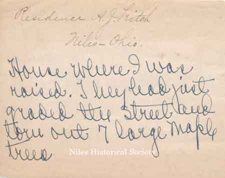
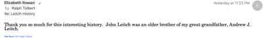

Ward-Thomas Museum


Andrew J. Leitch
Ward — Thomas
Museum
Home of the Niles Historical Society
503 Brown Street Niles, Ohio 44446
Click here to become a Niles Historical Society Member or to renew your membership
Click on any photograph to view a larger image, click on image again to zoom into photograph.
|
Dr. Andrew J. Leitch |
Reminiscences
about my father, Andrew J. Leitch My father was born in the County Donegal, Ireland, January 22, 1848. He was named Andrew, very likely for an uncle, Andrew Leitch, who settled in Charlottesville, Virginia where cousins lived. The J was an initial only, he added it after he grew up. He came to the United States when he was four years old and lived in Ohltown, Ohio on a farm. This is partly under water now as the Meander Creek was dammed to make the Youngstown, Ohio water supply. I never knew whether he was naturalized, just took for granted he was young enough to be included with his father, if his father took citizenship. I know he voted regularly, was a Democrat but never voted for Bryan. When I was a small child he took me with him and showed me how to vote. Once he took me to the Court House in Warren and let me watch a jury trial which he explained. |
|
| After receiving a diploma from Western Reserve Medical School, he started to practice medicine with Dr. H.M. Landis, who later had a son Robert, a noted T.B. specialist in Philadelphia. In 1881 he married Ella Matilda Ward, a young school teacher. Niles was a small town with a blast furnace and a steel rolling mill. They employed many Englishmen who received good wages and were some of the leading citizens, as were many Welsh. There were some Irish and a settlement of Italians in Russia Field (we pronounced it “Roosha”). As the leading physician of the town, he was called upon day and night. We were often awakened by someone pounding on the door or the side of the house trying to waken him. He never hesitated to go out at night and said the only thing he feared was dogs so he carried a cane. He had no use for a revolver and said the best weapon for attack was a baseball bat so we took him at his word and put one under his bed. A general practitioner was an internal medicine man, an obstetrician, orthopedist, public health officer, and skilled in minor surgery. |
||
| |
||
Leitch Residence at 234 West Park Avenue. |
 Back of personal note. |
The first office which I remember was in a building on Furnace Street, next door to the house we lived in and in which five of the children were born. About 1892 we moved to Chestnut Street and lived there until the Reeves house on Park Avenue was purchased about 1896. Paul was born there. Original photographs courtesy of Elizabeth Rowan. |
| |
||
| One of my first recollections was a fire which destroyed most of the business district, beginning on Main Street and extending around the office where the paint was scorched. This office building was later moved through the town to Main Street near Park Avenue, we rushed home from school to ride in it and wave to our friends. In 1893 an office building, the Reeves – Leitch block, was erected on Furnace Street and “the handsomely arranged” (Niles newspaper) office was on the second floor until father stopped practicing on account of his health. He bought a steel mill in Hammond, Indiana with Mr. R.G. Sykes who lived in Niles and owned a roofing company. This mill was purchased soon afterwards by the Steel Trust, which became U.S. Steel. The purchase cancelled plans for moving the family West. After the sale of the mill he returned to Niles and became President of the First National Bank. One time I stopped in at the bank and he allowed me to hold $50,000, as he was signing money issued by the bank. He was a public spirited citizen and was a early member of the School Board. Before I was born, he went to investigate a well on one of the school grounds. As gas was suspected, a lighted paper was dropped down the well. After no results, he leaned over and received the full explosion in his face and for some time it was feared that his sight was destroyed. In the summer when we were on vacation from school, if he had a call to make in the country, Mineral Ridge three miles, Ohltown five miles, Lordstown seven miles, he would call and tell the child whose turn it was to go on a ride to come to the office. If she was not at home, I often went, even though out of turn. He could not sing nor carry a tune and often said the only song he knew was the Star Spangled Banner because everyone stood up. As we rode along the dusty roads, he would ask us to sing, perhaps it was one way of keeping us awake on the warm, sunny afternoons. Often after school I would stop at the office to see if he was making any calls and go along and sit in the carriage or the sleigh. |
||
|
Postcard of Punch the pony and the phaeton carriage from Elizabeth’s Grandmother, Alma Leitch Rowan. |
At one time some cousins of grandmother’s from New York were visiting us and we learned that some of the Porter cousins in Newton Falls had a pony for sale. We could not rest until the guests left and father, with two of us, went to see the pony which he bought. There were five or six Porter children and each had to take a last ride. Punch was a small Indian pony which Robert rode and the rest of us drove in a small phaeton which had been specially made. My great grandfather, Andrew J. Leitch, was a
doctor in Niles, Ohio in the early 1900s. I wanted to pass along
these memories of him and his wife, Ella, which were
written by their daughter Harriet Leitch. Original photograph courtesy of Elizabeth Rowan. |
|
| |
||
Drawing of the Leitch residence as it appeared in the 1895 Trumbull County Atlas. |
The Dr. A.J. Leitch residence, located on the
corner of West Park Avenue Built before 1895 in the Italianate Villa Style of Victorian architecture, it was the home of the President of First National Bank, and later the home of Harry and Ethel Mason Evans. |
The Leitch residence as it appears today (2023). |
 |
L: Drawing by David Birskovich of the A.J. Leitch residence taken from the original photograph donated by Elizabeth Rowan. R: Residence of R.G. Sykes who along with Dr. Leitch bought a steel mill in Indiana. |
 |
A line drawing of the Dr. A. J. Leitch residence located at 234 West Park Avenue in Niles. Built before 1895, it was later the home of Harry and Ethel Mason Evans.PO1.427 |
Reminiscences about
my father, Andrew J. Leitch I was always fond of reading. There was no public library in Niles, only a poor school library with sets of the Elsie and Alger books. Father went to Cleveland every month to a medical meeting and always asked me which book I wanted him to bring me. I always had a list in case he could not get the one book and he usually brought back a couple from Burrows Book Store. He planned to be with us on Sunday evenings and read to us. Two books I remember were Water Babies and Chatterbox. Meals were rather irregular as to time. Often we stood at the front gate and watched down the street ready to rush in and give the signal that he was in sight or run down and hippity-hop up the street with him. He was very particular about our appearance. We had to come to the breakfast table fully clothed with our hair combed or be sent away from the table. We were allowed to go in our bare feet in the back yard only. No bicycle riding on Sunday but as a treat a surrey was rented at the local livery stable and a horse to join his own horse and we drove out to grandmother’s to spend the afternoon. |
|
Perhaps we thought he was severe as we saw so little of him compared to mother and he seemed to be the final voice of authority. He went with me to Smith when I was entering and stayed until I had the results of three entrance examinations, and encouraged me all the time. While I was in college he wrote to me every week. When I was called home from college on account of his first illness, May 30, 1903, he was in a coma for ten days, I decided that I would not return to college in the fall as I knew he would never be well. He told me he wanted me to go back that I would never be satisfied just to stay at home as the Niles girls did. When I was blue and wrote frankly of my discouragement after getting back to college, he made the effort to take the trip to Northhampton to see for himself how I was. The summer after this illness when he was recuperating, we went to Cambridge Springs, Pennsylvania. In the mornings we walked the mile to the Springs and drank water. He said that if a person walked that much at home it would do him just as much good. He never believed in dancing probably on account of the lack of musical ear but he permitted me to take private lessons in the ball room while he sat at a window and looked in. He was a member and regular attendant of the
Presbyterian Church. Once he said, “For anything I have
given to the church, I have received back many fold.” He
was present at Communion Service the Sunday before his final stroke. |
||
 Pages 110 and 111 in the History of Trumbull County lists this information about John G. Leitch. This information was sent to Elizabeth Rowan for any additional memories. Elizabeth Rowan replied that John Leitch was an older brother of her great grandfather, Andrew J. Leitch. |
 |
 |
| My great grandfather, Andrew J. Leitch, was a doctor in Niles, Ohio in the early 1900s. I wanted to pass along these memories of him and his wife, Ella, which were written by their daughter Harriet Leitch. — Elizabeth Rowan | ||
|
|
||


{kind=link}
{kind=link}
{kind=link}